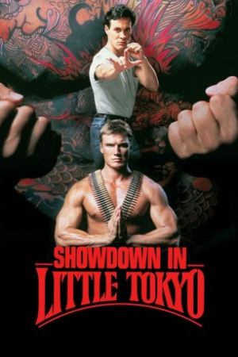

Country:United States, 79 minutes
Spoken languages:Japanese, English
Genres:Action
Director(s):Mark L. Lester
Writer(s):Stephen Glantz, Caliope Brattlestreet
Video Codec:Unknown
Number: 2369


Certification:R
Storyline:
An American with a Japanese upbringing, Chris Kenner is a police officer assigned to the Little Tokyo section of Los Angeles. Kenner is partnered with Johnny Murata, a Japanese-American who isn't in touch with his roots. Despite their differences, both men excel at martial arts, and utilize their formidable skills when they go up against Yoshida, a vicious yakuza drug dealer with ties to Kenner's past.
Cast:


Medium: Original DVD,
Comments: Part of: 4 Film Favorites - Martial Arts Collection
Loaned: No
Aspect ratio: Unknown